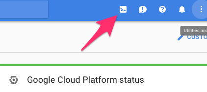

Creating a Kubernetes Cluster¶
Kubernetes’ documentation describes the many ways to set up a cluster. Here, we shall provide quick instructions for the most painless and popular ways of getting setup in various cloud providers:
- Google Cloud
- Microsoft Azure
- Amazon AWS
- Red Hat OpenShift
- Others
Note
- During the process of setting up JupyterHub, you’ll be creating some files for configuration purposes. It may be helpful to create a folder for your JuypterHub deployment to keep track of these files.
- If you are concerned at all about security (you probably should be), see the Kubernetes best-practices guide for information about keeping your Kubernetes infrastructure secure.
Setting up Kubernetes on Google Cloud¶
Google Kubernetes Engine (GKE) is the simplest and most common way of setting up a Kubernetes Cluster. You may be able to receive free credits for trying it out. You will need to connect your credit card or other payment method to your google cloud account.
Go to
https://console.cloud.google.comand log in.Enable the Kubernetes Engine API.
Use your preferred command line interface.
You have two options: a) use the Google Cloud Shell (no installation needed) or b) install and use the gcloud command-line tool. If you are unsure which to choose, we recommend beginning with option “a” and using the Google Cloud Shell. Instructions for each are detailed below:
- Use the Google Cloud Shell. Start the Google Cloud Shell
by clicking the button shown below. This will start an interactive shell session within Google Cloud.
See the Google Cloud Shell docs for more information.
- Install and use the gcloud command line tool.
This tool sends commands to Google Cloud and lets you do things like create
and delete clusters.
- Go to the gcloud command line tool downloads page to download and install the gcloud command line tool.
- See the gcloud documentation for more information on the gcloud command line tool.
Install
kubectl, which is a tool for controlling kubernetes. From the terminal, enter:gcloud components install kubectl
Create a Kubernetes cluster on Google Cloud, by typing the following command into either the Google Cloud shell or the gcloud command-line tool:
gcloud container clusters create <YOUR-CLUSTER> \ --num-nodes=3 \ --machine-type=n1-standard-2 \ --zone=us-central1-b \ --cluster-version=1.8.6-gke.0
where:
--num-nodesspecifies how many computers to spin up. The higher the number, the greater the cost.--machine-typespecifies the amount of CPU and RAM in each node. There is a variety of types to choose from. Picking something appropriate here will have a large effect on how much you pay - smaller machines restrict the max amount of RAM each user can have access to but allow more fine-grained scaling, reducing cost. The default (n1-standard-2) has 2CPUs and 7.5G of RAM each, and might not be a good fit for all use cases!--zonespecifies which data center to use. Pick something that is not too far away from your users. You can find a list of them here.--cluster-versionspecifies the version of kubernetes we want. Here, we specify the minimum that the default configuration will support.
To test if your cluster is initialized, run:
kubectl get node
The response should list three running nodes.
Give your account super-user permissions, allowing you to perform all the actions needed to set up JupyterHub.
kubectl create clusterrolebinding cluster-admin-binding \ --clusterrole=cluster-admin \ --user=<YOUR-EMAIL-ADDRESS>
Setting up Kubernetes on Microsoft Azure Container Service (AKS)¶
Prepare your Azure shell environment. You have two options, one is to use the Azure interactive shell, the other is to install the Azure command-line tools locally. Instructions for each are below.
Using the Azure interactive shell. The Azure Portal contains an interactive shell that you can use to communicate with your Kubernetes cluster. To access this shell, go to portal.azure.com and click on the button below.

Note
- If you get errors like
could not retrieve token from local cache, try refreshing your browser window. - The first time you do this, you’ll be asked to create a storage account where your shell filesystem will live.
Install command-line tools locally. You can access the Azure CLI via a package that you can install locally.
To do so, first follow the installation instructions in the Azure documentation. Then run the following command to connect your local CLI with your account:
az login
You’ll need to open a browser and follow the instructions in your terminal to log in.
Activate the correct subscription. Azure uses the concept of subscriptions to manage spending. You can get a list of subscriptions your account has access to by running:
az account list --refresh --output table
Pick the subscription you want to use for creating the cluster, and set that as your default.
az account set -s <YOUR-CHOSEN-SUBSCRIPTION-NAME>Create a resource group. Azure uses the concept of resource groups to group related resources together. We need to create a resource group in a given data center location. We will create computational resources within this resource group.
az group create \ --name=<RESOURCE-GROUP-NAME> \ --location=centralus \ --output table
where:
--namespecifies the name of your resource group. We recommend using something that uniquely identifies this hub. For example, if you are creating a resource group for UC Berkeley’s 2018 Spring Data100 Course, you may give it a<RESOURCE-GROUP-NAME>ofucb_2018sp_data100_hub.--locationspecifies the location of the data center you want your resource to be in. In this case, we used thecentraluslocation. For other options, see the Azure list of locations that support AKS.--output tablespecifies that the output should be in human readable format, rather than the default JSON output. We shall use this with most commands when executing them by hand.
Enable the cloud APIs required before creating a cluster.
The following commands enable various Azure tools that we’ll need in creating and managing the JupyterHub.
az provider register --name Microsoft.Network --wait az provider register --name Microsoft.Compute --wait az provider register --name Microsoft.Storage --wait az provider register --name Microsoft.ContainerService --wait
Note
Each of these commands may take up to several minutes to complete.
Choose a cluster name.
In the following steps we’ll run commands that ask you to input a cluster name. We recommend using something descriptive and short. We’ll refer to this as
<CLUSTER-NAME>for the remainder of this section.The next step will create a few files on your filesystem, so first create a folder in which these files will go. We recommend giving it the same name as your cluster:
mkdir <CLUSTER-NAME> cd <CLUSTER-NAME>
Create an ssh key to secure your cluster.
ssh-keygen -f ssh-key-<CLUSTER-NAME>
It will prompt you to add a password, which you can leave empty if you wish. This will create a public key named
ssh-key-<CLUSTER-NAME>.puband a private key namedssh-key-<CLUSTER-NAME>. Make sure both go into the folder we created earlier, and keep both of them safe!Note
This command will also print out something to your terminal screen. You don’t need to do anything with this text.
Create an AKS cluster.
The following command will request a Kubernetes cluster within the resource group that we created earlier.
az aks create --name <CLUSTER-NAME> \ --resource-group <RESOURCE-GROUP-NAME> \ --ssh-key-value ssh-key-<CLUSTER-NAME>.pub \ --node-count 3 \ --node-vm-size Standard_D2s_v3 \ --kubernetes-version 1.8.2 \ --output table
where:
--nameis the name you want to use to refer to your cluster--resource-groupis the ResourceGroup you created in step 4--ssh-key-valueis the ssh public key created in step 7--node-countis the number of nodes you want in your kubernetes cluster--node-vm-sizeis the size of the nodes you want to use, which varies based on what you are using your cluster for and how much RAM/CPU each of your users need. There is a list of all possible node sizes for you to choose from, but not all might be available in your location.--kubernetes-versionis the version of Kubernetes we want to use.
This should take a few minutes and provide you with a working Kubernetes cluster!
Install kubectl, a tool for accessing the Kubernetes API from the commandline:
az aks install-cli
Get credentials from Azure for
kubectlto work:az aks get-credentials \ --name <CLUSTER-NAME> \ --resource-group <RESOURCE-GROUP-NAME> \ --output table
where:
--nameis the name you gave your cluster in step 7--resource-groupis the ResourceGroup you created in step 4
- Check if your cluster is fully functional
kubectl get nodeThe response should list three running nodes and their kubernetes versions! Each node should have the status of
Ready, note that this may take a few moments.
Note
Azure AKS is still in preview, and not all features might work as intended. In particular,
- You have to not use RBAC, since AKS does not support it yet.
- You should skip step 2 (granting RBAC rights) with the “initialization” section when setting up helm.
Setting up Kubernetes on Amazon Web Services (AWS)¶
AWS does not have native support for Kubernetes, however there are many organizations that have put together their own solutions and guides for setting up Kubernetes on AWS.
We like the Heptio guide, and recommend using this for setting up your cluster for clusters that span short periods of time (a week long workshop, for example). However, if you are setting up a cluster that would need to run for much longer, we recommend you use [kops](https://kubernetes.io/docs/getting-started-guides/kops/). It is a bit more complex, but provides features (such as log collection & cluster upgrades) that are necessary to run a longer term cluster.
Note
The Heptio deployment of Kubernetes on AWS should not be considered production-ready. See the introduction in the Heptio Kubernetes tutorial for information about what to expect.
Follow Step 1 of the Heptio guide, called Prepare your AWS Account.
This sets up your Amazon account with the credentials needed to run Kubernetes.
Note
- Make sure that you keep the file downloaded when you create the SSH
key. This will be needed later to allow
kubectlto interact with your Kubernetes cluster. - You may find it helpful to “pin” the services we’ll be using to your AWS
navbar. This makes it easier to navigate in subsequent sessions.
Click the “pin” icon at the top, then drag
CloudFormationandEC2into your navbar.
- Make sure that you keep the file downloaded when you create the SSH
key. This will be needed later to allow
Deploy a Kubernetes template from Heptio.
Note
This section largely follows Step 2 of the Heptio guide.
AWS makes it possible to deploy computational resources in a “stack” using templates. Heptio has put together a template for running Kubernetes on AWS. Click the button below to select the Heptio template, then follow the instructions below.
You’ll be taken to an AWS page with a field already chosen under “Choose a template”. Simply hit “Next”.
Enter AWS instance information (page 1): On this page you’ll tell AWS what kind of hardware you need. Fill in the following required fields:
Stack Namecan be anything you like.Availability Zoneis related to the location of the AWS resources. Choose an AWS location close to your physical location or any other desired AWS location.Admin Ingress Locationdefines the locations from which you can access this cluster as an administrator. Enter0.0.0.0/0for the most permissive approach.SSH Keyis a dropdown list of keys attached to your account. The one you created in Step 1 should be listed here. This will allow you to SSH into the machines if you desire.Node Capacitydefines the number of machines you’ve got available. This will depend on theInstance Typethat you choose. E.g., if you want each user to have 2GB and you expect 10 users, choose a combination ofInstance TypeandNode Capacitythat meets this requirement.Instance Typedefines what kind of machine you’re requesting. See this list of instance types with Amazon as well as this list of pricing for each instance type.Disk Sizecorresponds to the hard disk for each node. Note that this is different from the disks that users will use for their own notebooks/data. This disk should be large enough to contain the size of any Docker images you’re serving with the JupyterHub.Instance Type (Bastion Host)corresponds to a computer that allows for easy SSH access to your Kubernetes cluster. This does not need to be a fancy computer. You may leave these as defaults. For more information on the Bastion Host, see here.
Enter AWS instance information (page 2): On the second page you may leave all of these fields as is or customize as you wish. When done, hit
Next. Then confirm and hitNextonce more.AWS will now create the computational resources defined in the Heptio template (and according to the options that you chose).
To see the status of the resources you’ve requested, see the
CloudFormationpage. You should see two stacks being created, each will have the name you’ve requested. When they’re done creating, continue with the guide.Note
This often takes 15-20 minutes to finish. You’ll know it’s done when both stacks show the status
CREATE_COMPLETE.Ensure that the latest version of kubectl is installed on your machine be following the install instructions.
Configure your
kubectlto send instructions to the newly-created Kubernetes cluster. To do this, you’ll need to copy a security file onto your computer. Heptio has pre-configured the command needed to do this. To access it, from theCloudFormationpage click on the stack you just created (the one without “k8s-stack” in it). Below, there is an “Outputs” tab. Click on this, and look for a field calledGetKubeConfigCommand. Copy / paste that text into your terminal, replacing thepath/to/myKey.pemwith the path to the key you downloaded in Step 1. It looks something like:SSH_KEY="<path/to/varMyKey.pem>"; scp -i $SSH_KEY -o ProxyCommand="ssh -i \"${SSH_KEY}\" ubuntu@<BastionHostPublicIP> nc %h %p" ubuntu@<MasterPrivateIP>:~/kubeconfig ./kubeconfigTell Kubernetes to use this configuration file. Run:
export KUBECONFIG=$(pwd)/kubeconfig
Confirm that
kubectlis connected to your Kubernetes cluster. Run:kubectl get nodes
you should see a list of three nodes, each beginning with
ip.Enable dynamic storage on your Kubernetes cluster. Create a file,
storageclass.ymlon your local computer, and enter this text:kind: StorageClass apiVersion: storage.k8s.io/v1 metadata: annotations: storageclass.beta.kubernetes.io/is-default-class: "true" name: gp2 provisioner: kubernetes.io/aws-ebs parameters: type: gp2
Next, run this command:
kubectl apply -f storageclass.yml
This enables dynamic provisioning of disks, allowing us to automatically assign a disk per user when they log in to JupyterHub.
Enable legacy authorization mode. This is temporarily required since the newer and more secure authorization mode is not out of beta yet.
kubectl create clusterrolebinding permissive-binding \ --clusterrole=cluster-admin \ --user=admin \ --user=kubelet \ --group=system:serviceaccounts
This step should hopefully go away soon!
You should now be ready for the next step.
Next Step¶
Now that you have a Kubernetes cluster running, it is time to set up helm.